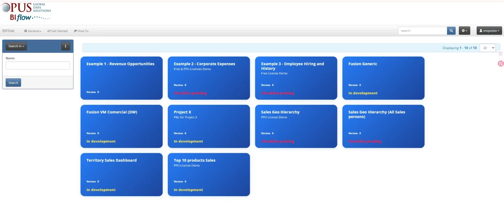
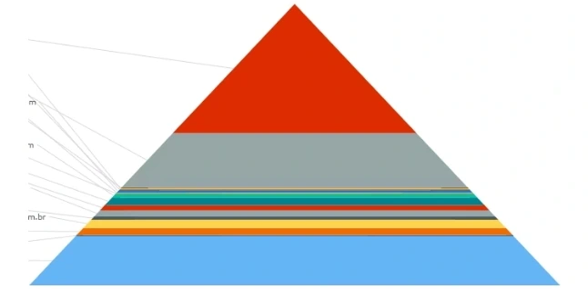

Empresas com equipes internas
Reúna indicadores de vendas, finanças e operações em um catálogo acessível conforme a função de cada pessoa.
Publique seus relatórios no Power BI e distribua-os pelo BIFlow. Equipes, clientes e parceiros encontram seus painéis em um só lugar, enquanto você administra permissões e acompanha o uso.

A equipe publica o relatório no Power BI, libera o acesso ao grupo responsável no BIFlow e acompanha o uso pelo portal.
Reúna indicadores de vendas, finanças e operações em um catálogo acessível conforme a função de cada pessoa.
Ofereça aos clientes um ponto de acesso para consultar os relatórios disponibilizados para eles.
Inclua a distribuição e a gestão de acesso na entrega dos projetos Power BI.
Compartilhe indicadores com áreas internas, clientes e fornecedores pelo mesmo portal.
Organize os painéis em um catálogo e concentre a administração de usuários e grupos em um só lugar.
Defina quem pode consultar cada relatório e use a auditoria para acompanhar os acessos.
Acompanhe quais painéis são consultados para entender onde os relatórios já fazem parte da rotina.
Administre permissões por usuário e grupo.
Consulte o histórico para saber quem acessou os relatórios.
Acompanhe quem usa o portal e como os acessos variam ao longo do tempo.
Aplique as regras internas de acesso ao distribuir relatórios.

Em uma distribuidora, o gerente consolidava dados de vários sistemas e preparava relatórios mensais por representante.
Os relatórios deram lugar a painéis no portal, com atualização noturna e acesso aos dados dos territórios e clientes de cada representante.
Os representantes passaram a acompanhar tendências entre os fechamentos mensais e a usar os dados para priorizar contas e planejar visitas.
Entre os fechamentos mensais, os representantes passaram a comparar períodos, identificar contas com queda nas compras e priorizar visitas por território. A atualização noturna substituiu a preparação mensal desses relatórios.
Uma organização em crescimento queria levar os indicadores operacionais além do grupo que já usava Power BI no dia a dia. Com o portal, usuários ocasionais passaram a consultar os painéis relevantes à sua função, enquanto a equipe responsável centralizou a gestão de permissões e o acompanhamento do uso.
Quando muitos usuários consultam relatórios apenas ocasionalmente, vale comparar a distribuição por capacidade com o modelo por usuário. Inclua na comparação o esforço de administração de usuários e permissões.
A comparação deve considerar o licenciamento aplicável, a configuração do ambiente e o volume de uso.
O material comercial apresenta um cenário de 50 usuários com 85% de redução no custo de licenciamento e retorno de 5,7×. São números ilustrativos, sem premissas detalhadas no material. O resultado de cada empresa depende de licenciamento, capacidade, frequência de uso e custos operacionais.
Diagnóstico das fontes, da estrutura dos dados e dos indicadores.
Painéis personalizados para acompanhar os indicadores da operação.
Orientação para as equipes usarem e evoluírem suas soluções em Power BI.
Acompanhamento técnico de relatórios, atualizações e desempenho.
Conte quais relatórios você precisa distribuir e quem deve ter acesso. Na demonstração, podemos percorrer a publicação, as permissões e o monitoramento de uso.
Solicitar demonstração →